- After studying this chapter, you will be able to:
- Relate the developmental processes of the embryonic nervous system to the adult structures
- Name the major regions of the adult nervous system
- Locate regions of the cerebral cortex on the basis of anatomical landmarks common to all human brains
- Describe the regions of the spinal cord in cross-section
- List the cranial nerves in order of anatomical location and provide the central and peripheral connections
- List the spinal nerves by vertebral region and by which nerve plexus each supplies
- Describe the growth and differentiation of the neural tube
- Relate the different stages of development to the adult structures of the central nervous system
- Explain the expansion of the ventricular system of the adult brain from the central canal of the neural tube
- Describe the connections of the diencephalon and cerebellum on the basis of patterns of embryonic development
The brain is a complex organ composed of gray parts and white matter, which can be hard to distinguish. Starting from an embryologic perspective allows you to understand more easily how the parts relate to each other. The embryonic nervous system begins as a very simple structure—essentially just a straight line, which then gets increasingly complex. Looking at the development of the nervous system with a couple of early snapshots makes it easier to understand the whole complex system.
Many structures that appear to be adjacent in the adult brain are not connected, and the connections that exist may seem arbitrary. But there is an underlying order to the system that comes from how different parts develop. By following the developmental pattern, it is possible to learn what the major regions of the nervous system are.
To begin, a sperm cell and an egg cell fuse to become a fertilized egg. The fertilized egg cell, or zygote, starts dividing to generate the cells that make up an entire organism. Sixteen days after fertilization, the developing embryo’s cells belong to one of three germ layers that give rise to the different tissues in the body. The endoderm, or inner tissue, is responsible for generating the lining tissues of various spaces within the body, such as the mucosae of the digestive and respiratory systems. The mesoderm, or middle tissue, gives rise to most of the muscle and connective tissues. Finally the ectoderm, or outer tissue, develops into the integumentary system (the skin) and the nervous system. It is probably not difficult to see that the outer tissue of the embryo becomes the outer covering of the body. But how is it responsible for the nervous system?
As the embryo develops, a portion of the ectoderm differentiates into a specialized region of neuroectoderm, which is the precursor for the tissue of the nervous system. Molecular signals induce cells in this region to differentiate into the neuroepithelium, forming aneural plate. The cells then begin to change shape, causing the tissue to buckle and fold inward (Figure \(\PageIndex{1}\) ). Aneural grooveforms, visible as a line along the dorsal surface of the embryo. The ridge-like edge on either side of the neural groove is referred as theneural fold. As the neural folds come together and converge, the underlying structure forms into a tube just beneath the ectoderm called theneural tube. Cells from the neural folds then separate from the ectoderm to form a cluster of cells referred to as theneural crest, which runs lateral to the neural tube. The neural crest migrates away from the nascent, or embryonic, central nervous system (CNS) that will form along the neural groove and develops into several parts of the peripheral nervous system (PNS), including the enteric nervous tissue. Many tissues that are not part of the nervous system also arise from the neural crest, such as craniofacial cartilage and bone, and melanocytes.
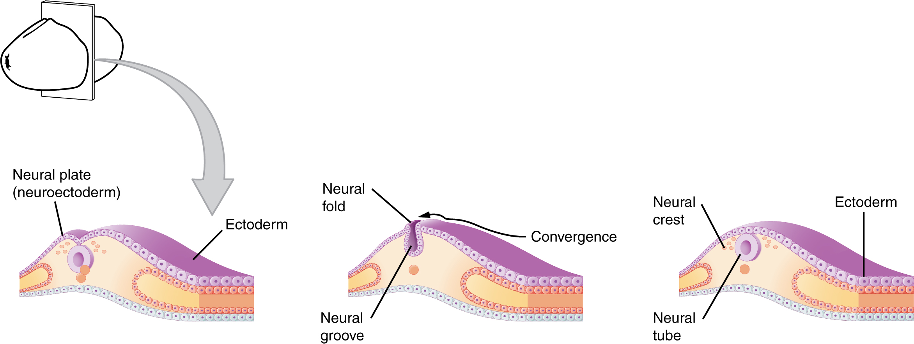
At this point, the early nervous system is a simple, hollow tube. It runs from the anterior end of the embryo to the posterior end. Beginning at 25 days, the anterior end develops into the brain, and the posterior portion becomes the spinal cord. This is the most basic arrangement of tissue in the nervous system, and it gives rise to the more complex structures by the fourth week of development.
As the anterior end of the neural tube starts to develop into the brain, it undergoes a couple of enlargements; the result is the production of sac-like vesicles. Similar to a child’s balloon animal, the long, straight neural tube begins to take on a new shape. Three vesicles form at the first stage, which are calledprimary vesicles. These vesicles are given names that are based on Greek words, the main root word beingenkephalon, which means “brain” (en- = “inside”; kephalon = “head”). The prefix to each generally corresponds to its position along the length of the developing nervous system.
Theprosencephalon(pros- = “in front”) is the forward-most vesicle, and the term can be loosely translated to meanforebrain. Themesencephalon(mes- = “middle”) is the next vesicle, which can be called themidbrain. The third vesicle at this stage is therhombencephalon. The first part of this word is also the root of the word rhombus, which is a geometrical figure with four sides of equal length (a square is a rhombus with 90° angles). Whereas prosencephalon and mesencephalon translate into the English words forebrain and midbrain, there is not a word for “four-sided-figure-brain.” However, the third vesicle can be called thehindbrain. One way of thinking about how the brain is arranged is to use these three regions—forebrain, midbrain, and hindbrain—which are based on the primary vesicle stage of development (Figure 13.3a).
The brain continues to develop, and the vesicles differentiate further (see Figure \(\PageIndex{2}\)b). The three primary vesicles become fivesecondary vesicles. The prosencephalon enlarges into two new vesicles called thetelencephalonand thediencephalon. The telecephalon will become the cerebrum. The diencephalon gives rise to several adult structures; two that will be important are the thalamus and the hypothalamus. In the embryonic diencephalon, a structure known as the eye cup develops, which will eventually become the retina, the nervous tissue of the eye called the retina. This is a rare example of nervous tissue developing as part of the CNS structures in the embryo, but becoming a peripheral structure in the fully formed nervous system.
The mesencephalon does not differentiate into any finer divisions. The midbrain is an established region of the brain at the primary vesicle stage of development and remains that way. The rest of the brain develops around it and constitutes a large percentage of the mass of the brain. Dividing the brain into forebrain, midbrain, and hindbrain is useful in considering its developmental pattern, but the midbrain is a small proportion of the entire brain, relatively speaking.
The rhombencephalon develops into themetencephalonandmyelencephalon. The metencephalon corresponds to the adult structure known as the pons and also gives rise to the cerebellum. The cerebellum (from the Latin meaning “little brain”) accounts for about 10 percent of the mass of the brain and is an important structure in itself. The most significant connection between the cerebellum and the rest of the brain is at the pons, because the pons and cerebellum develop out of the same vesicle. The myelencephalon corresponds to the adult structure known as the medulla oblongata. The structures that come from the mesencephalon and rhombencephalon, except for the cerebellum, are collectively considered thebrain stem, which specifically includes the midbrain, pons, and medulla.
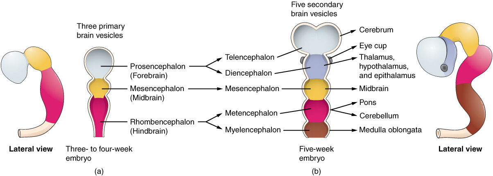
Watch thisanimationto examine the development of the brain, starting with the neural tube. As the anterior end of the neural tube develops, it enlarges into the primary vesicles that establish the forebrain, midbrain, and hindbrain. Those structures continue to develop throughout the rest of embryonic development and into adolescence. They are the basis of the structure of the fully developed adult brain. How would you describe the difference in the relative sizes of the three regions of the brain when comparing the early (25th embryonic day) brain and the adult brain?
While the brain is developing from the anterior neural tube, the spinal cord is developing from the posterior neural tube. However, its structure does not differ from the basic layout of the neural tube. It is a long, straight cord with a small, hollow space down the center. The neural tube is defined in terms of its anterior versus posterior portions, but it also has a dorsal–ventral dimension. As the neural tube separates from the rest of the ectoderm, the side closest to the surface is dorsal, and the deeper side is ventral.
As the spinal cord develops, the cells making up the wall of the neural tube proliferate and differentiate into the neurons and glia of the spinal cord. The dorsal tissues will be associated with sensory functions, and the ventral tissues will be associated with motor functions.
Embryonic development can help in understanding the structure of the adult brain because it establishes a framework on which more complex structures can be built. First, the neural tube establishes the anterior–posterior dimension of the nervous system, which is called theneuraxis. The embryonic nervous system in mammals can be said to have a standard arrangement. Humans (and other primates, to some degree) make this complicated by standing up and walking on two legs. The anterior–posterior dimension of the neuraxis overlays the superior–inferior dimension of the body. However, there is a major curve between the brain stem and forebrain, which is called thecephalic flexure. Because of this, the neuraxis starts in an inferior position—the end of the spinal cord—and ends in an anterior position, the front of the cerebrum. If this is confusing, just imagine a four-legged animal standing up on two legs. Without the flexure in the brain stem, and at the top of the neck, that animal would be looking straight up instead of straight in front (Figure \(\PageIndex{3}\) ).
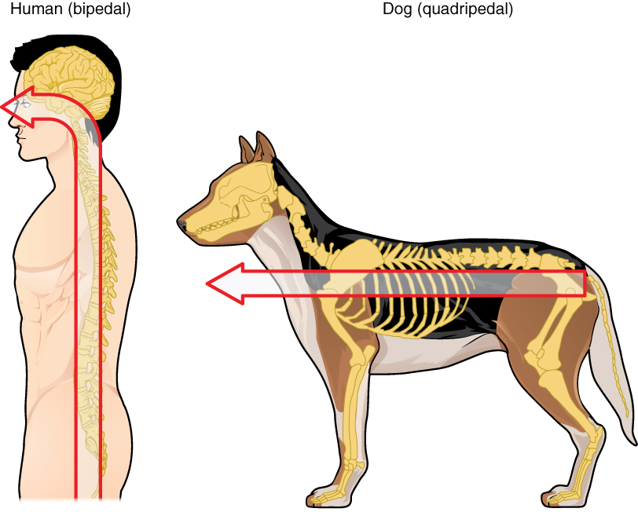
In summary, the primary vesicles help to establish the basic regions of the nervous system: forebrain, midbrain, and hindbrain. These divisions are useful in certain situations, but they are not equivalent regions. The midbrain is small compared with the hindbrain and particularly the forebrain. The secondary vesicles go on to establish the major regions of the adult nervous system that will be followed in this text. The telencephalon is the cerebrum, which is the major portion of the human brain. The diencephalon continues to be referred to by this Greek name, because there is no better term for it (dia- = “through”). The diencephalon is between the cerebrum and the rest of the nervous system and can be described as the region through which all projections have to pass between the cerebrum and everything else. The brain stem includes the midbrain, pons, and medulla, which correspond to the mesencephalon, metencephalon, and myelencephalon. The cerebellum, being a large portion of the brain, is considered a separate region. Table 13.1 connects the different stages of development to the adult structures of the CNS.
One other benefit of considering embryonic development is that certain connections are more obvious because of how these adult structures are related. The retina, which began as part of the diencephalon, is primarily connected to the diencephalon. The eyes are just inferior to the anterior-most part of the cerebrum, but the optic nerve extends back to the thalamus as the optic tract, with branches into a region of the hypothalamus. There is also a connection of the optic tract to the midbrain, but the mesencephalon is adjacent to the diencephalon, so that is not difficult to imagine. The cerebellum originates out of the metencephalon, and its largest white matter connection is to the pons, also from the metencephalon. There are connections between the cerebellum and both the medulla and midbrain, which are adjacent structures in the secondary vesicle stage of development. In the adult brain, the cerebellum seems close to the cerebrum, but there is no direct connection between them.
Another aspect of the adult CNS structures that relates to embryonic development is the ventricles—open spaces within the CNS where cerebrospinal fluid circulates. They are the remnant of the hollow center of the neural tube. The four ventricles and the tubular spaces associated with them can be linked back to the hollow center of the embryonic brain (see Table \(\PageIndex{1}\) ).
| Neural tube | Primary vesicle stage | Secondary vesicle stage | Adult structures | Ventricles |
|---|---|---|---|---|
| Anterior neural tube | Prosencephalon | Telencephalon | Cerebrum | Lateral ventricles |
| Anterior neural tube | Prosencephalon | Diencephalon | Diencephalon | Third ventricle |
| Anterior neural tube | Mesencephalon | Mesencephalon | Midbrain | Cerebral aqueduct |
| Anterior neural tube | Rhombencephalon | Metencephalon | Pons cerebellum | Fourth ventricle |
| Anterior neural tube | Rhombencephalon | Myelencephalon | Medulla | Fourth ventricle |
| Posterior neural tube | Spinal cord | Central canal |
Early formation of the nervous system depends on the formation of the neural tube. A groove forms along the dorsal surface of the embryo, which becomes deeper until its edges meet and close off to form the tube. If this fails to happen, especially in the posterior region where the spinal cord forms, a developmental defect called spina bifida occurs. The closing of the neural tube is important for more than just the proper formation of the nervous system. The surrounding tissues are dependent on the correct development of the tube. The connective tissues surrounding the CNS can be involved as well.
There are three classes of this disorder: occulta, meningocele, and myelomeningocele (Figure \(\PageIndex{4}\)). The first type, spina bifida occulta, is the mildest because the vertebral bones do not fully surround the spinal cord, but the spinal cord itself is not affected. No functional differences may be noticed, which is what the word occulta means; it is hidden spina bifida. The other two types both involve the formation of a cyst—a fluid-filled sac of the connective tissues that cover the spinal cord called the meninges. “Meningocele” means that the meninges protrude through the spinal column but nerves may not be involved and few symptoms are present, though complications may arise later in life. “Myelomeningocele” means that the meninges protrude and spinal nerves are involved, and therefore severe neurological symptoms can be present.
Often surgery to close the opening or to remove the cyst is necessary. The earlier that surgery can be performed, the better the chances of controlling or limiting further damage or infection at the opening. For many children with meningocele, surgery will alleviate the pain, although they may experience some functional loss. Because the myelomeningocele form of spina bifida involves more extensive damage to the nervous tissue, neurological damage may persist, but symptoms can often be handled. Complications of the spinal cord may present later in life, but overall life expectancy is not reduced.
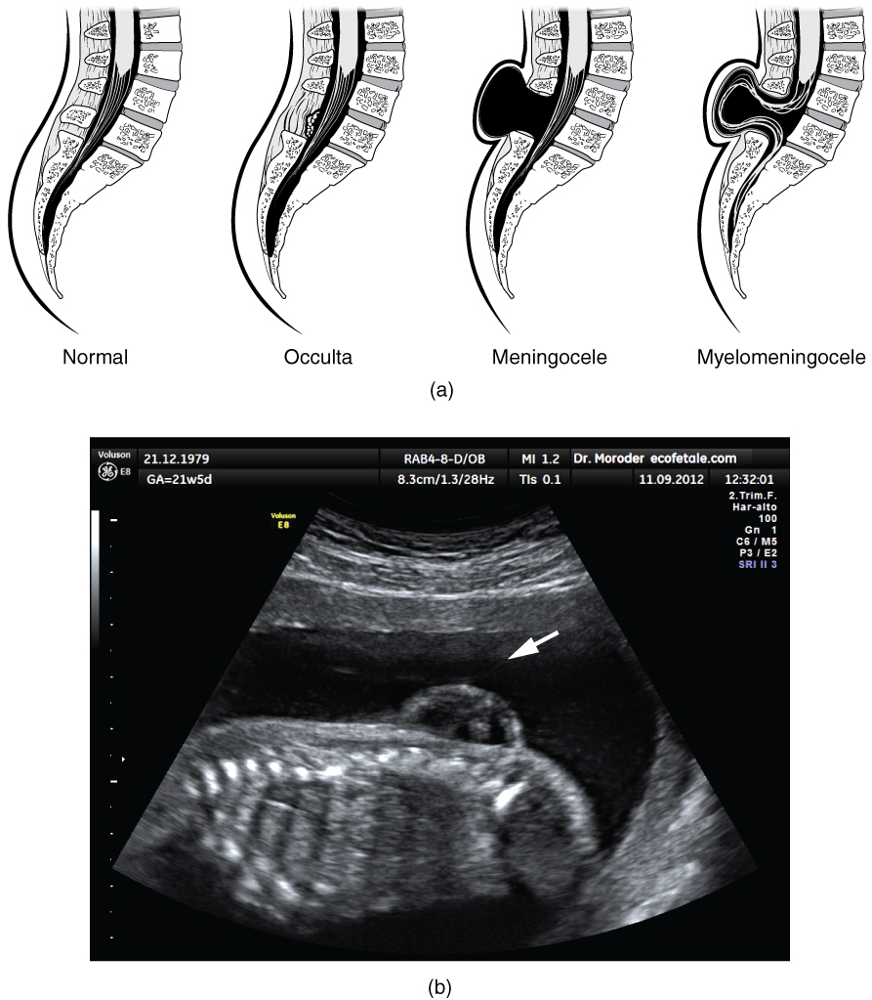
Watch thisvideoto learn about the white matter in the cerebrum that develops during childhood and adolescence. This is a composite of MRI images taken of the brains of people from 5 years of age through 20 years of age, demonstrating how the cerebrum changes. As the color changes to blue, the ratio of gray matter to white matter changes. The caption for the video describes it as “less gray matter,” which is another way of saying “more white matter.” If the brain does not finish developing until approximately 20 years of age, can teenagers be held responsible for behaving badly?
📖 OpenStax Anatomy & Physiology 2e, Section 13.2. openstax.org · CC BY 4.0
- Name the major regions of the adult brain
- Describe the connections between the cerebrum and brain stem through the diencephalon, and from those regions into the spinal cord
- Recognize the complex connections within the subcortical structures of the basal nuclei
- Explain the arrangement of gray and white matter in the spinal cord
The brain and the spinal cord are the central nervous system, and they represent the main organs of the nervous system. The spinal cord is a single structure, whereas the adult brain is described in terms of four major regions: the cerebrum, the diencephalon, the brain stem, and the cerebellum. A person’s conscious experiences are based on neural activity in the brain. The regulation of homeostasis is governed by a specialized region in the brain. The coordination of reflexes depends on the integration of sensory and motor pathways in the spinal cord.
The iconic gray mantle of the human brain, which appears to make up most of the mass of the brain, is thecerebrum(Figure \(\PageIndex{1}\) =). The wrinkled portion is thecerebral cortex, and the rest of the structure is beneath that outer covering. There is a large separation between the two sides of the cerebrum called thelongitudinal fissure. It separates the cerebrum into two distinct halves, a right and leftcerebral hemisphere. Deep within the cerebrum, the white matter of thecorpus callosumprovides the major pathway for communication between the two hemispheres of the cerebral cortex.
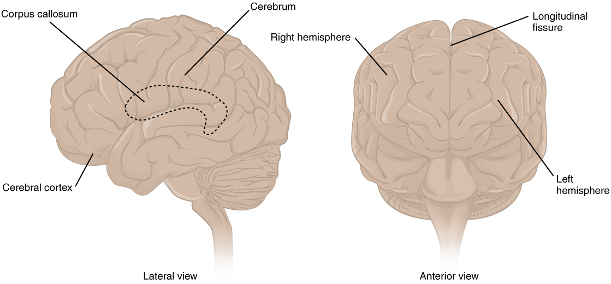
Many of the higher neurological functions, such as memory, emotion, and consciousness, are the result of cerebral function. The complexity of the cerebrum is different across vertebrate species. The cerebrum of the most primitive vertebrates is not much more than the connection for the sense of smell. In mammals, the cerebrum comprises the outer gray matter that is the cortex (from the Latin word meaning “bark of a tree”) and several deep nuclei that belong to three important functional groups. Thebasal nucleiare responsible for cognitive processing, the most important function being that associated with planning movements. Thebasal forebraincontains nuclei that are important in learning and memory. Thelimbic cortexis the region of the cerebral cortex that is part of thelimbic system, a collection of structures involved in emotion, memory, and behavior.
The cerebrum is covered by a continuous layer of gray matter that wraps around either side of the forebrain—the cerebral cortex. This thin, extensive region of wrinkled gray matter is responsible for the higher functions of the nervous system. Agyrus(plural = gyri) is the ridge of one of those wrinkles, and asulcus(plural = sulci) is the groove between two gyri. The pattern of these folds of tissue indicates specific regions of the cerebral cortex.
The head is limited by the size of the birth canal, and the brain must fit inside the cranial cavity of the skull. Extensive folding in the cerebral cortex enables more gray matter to fit into this limited space. If the gray matter of the cortex were peeled off of the cerebrum and laid out flat, its surface area would be roughly equal to one square meter.
The folding of the cortex maximizes the amount of gray matter in the cranial cavity. During embryonic development, as the telencephalon expands within the skull, the brain goes through a regular course of growth that results in everyone’s brain having a similar pattern of folds. The surface of the brain can be mapped on the basis of the locations of large gyri and sulci. Using these landmarks, the cortex can be separated into four major regions, or lobes (Figure \(\PageIndex{2}\) ). Thelateral sulcusthat separates thetemporal lobefrom the other regions is one such landmark. Superior to the lateral sulcus are theparietal lobeandfrontal lobe, which are separated from each other by thecentral sulcus. The posterior region of the cortex is theoccipital lobe, which has no obvious anatomical border between it and the parietal or temporal lobes on the lateral surface of the brain. From the medial surface, an obvious landmark separating the parietal and occipital lobes is called theparieto-occipital sulcus. The fact that there is no obvious anatomical border between these lobes is consistent with the functions of these regions being interrelated.

Different regions of the cerebral cortex can be associated with particular functions, a concept known as localization of function. In the early 1900s, a German neuroscientist named Korbinian Brodmann performed an extensive study of the microscopic anatomy—the cytoarchitecture—of the cerebral cortex and divided the cortex into 52 separate regions on the basis of the histology of the cortex. His work resulted in a system of classification known asBrodmann’s areas, which is still used today to describe the anatomical distinctions within the cortex (Figure \(\PageIndex{3}\) ). The results from Brodmann’s work on the anatomy align very well with the functional differences within the cortex. Areas 17 and 18 in the occipital lobe are responsible for primary visual perception. That visual information is complex, so it is processed in the temporal and parietal lobes as well.
The temporal lobe is associated with primary auditory sensation, known as Brodmann’s areas 41 and 42 in the superior temporal lobe. Because regions of the temporal lobe are part of the limbic system, memory is an important function associated with that lobe. Memory is essentially a sensory function; memories are recalled sensations such as the smell of Mom’s baking or the sound of a barking dog. Even memories of movement are really the memory of sensory feedback from those movements, such as stretching muscles or the movement of the skin around a joint. Structures in the temporal lobe are responsible for establishing long-term memory, but the ultimate location of those memories is usually in the region in which the sensory perception was processed.
The main sensation associated with the parietal lobe issomatosensation, meaning the general sensations associated with the body. Posterior to the central sulcus is thepostcentral gyrus, the primary somatosensory cortex, which is identified as Brodmann’s areas 1, 2, and 3. All of the tactile senses are processed in this area, including touch, pressure, tickle, pain, itch, and vibration, as well as more general senses of the body such asproprioceptionandkinesthesia, which are the senses of body position and movement, respectively.
Anterior to the central sulcus is the frontal lobe, which is primarily associated with motor functions. Theprecentral gyrusis the primary motor cortex. Cells from this region of the cerebral cortex are the upper motor neurons that instruct cells in the spinal cord to move skeletal muscles. Anterior to this region are a few areas that are associated with planned movements. Thepremotor areais responsible for thinking of a movement to be made. Thefrontal eye fieldsare important in eliciting eye movements and in attending to visual stimuli.Broca’s areais responsible for the production of language, or controlling movements responsible for speech; in the vast majority of people, it is located only on the left side. Anterior to these regions is theprefrontal lobe, which serves cognitive functions that can be the basis of personality, short-term memory, and consciousness. The prefrontal lobotomy is an outdated mode of treatment for personality disorders (psychiatric conditions) that profoundly affected the personality of the patient.
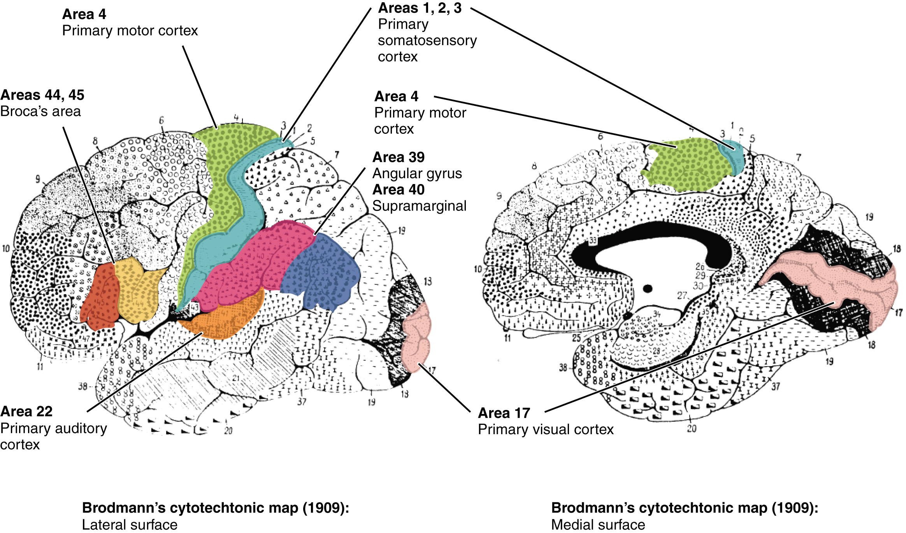
#### Subcortical structures
Beneath the cerebral cortex are sets of nuclei known assubcortical nucleithat augment cortical processes. The nuclei of the basal forebrain serve as the primary location for acetylcholine production, which modulates the overall activity of the cortex, possibly leading to greater attention to sensory stimuli. Alzheimer’s disease is associated with a loss of neurons in the basal forebrain. Thehippocampusandamygdalaare medial-lobe structures that, along with the adjacent cortex, are involved in long-term memory formation and emotional responses. The basal nuclei are a set of nuclei in the cerebrum responsible for comparing cortical processing with the general state of activity in the nervous system to influence the likelihood of movement taking place. For example, while a student is sitting in a classroom listening to a lecture, the basal nuclei will keep the urge to jump up and scream from actually happening. (The basal nuclei are also referred to as the basal ganglia, although that is potentially confusing because the term ganglia is typically used for peripheral structures.)
The major structures of the basal nuclei that control movement are thecaudate,putamen, andglobus pallidus, which are located deep in the cerebrum. The caudate is a long nucleus that follows the basic C-shape of the cerebrum from the frontal lobe, through the parietal and occipital lobes, into the temporal lobe. The putamen is mostly deep in the anterior regions of the frontal and parietal lobes. Together, the caudate and putamen are called thestriatum. The globus pallidus is a layered nucleus that lies just medial to the putamen; they are called the lenticular nuclei because they look like curved pieces fitting together like lenses. The globus pallidus has two subdivisions, the external and internal segments, which are lateral and medial, respectively. These nuclei are depicted in a frontal section of the brain in Figure \(\PageIndex{4}\).
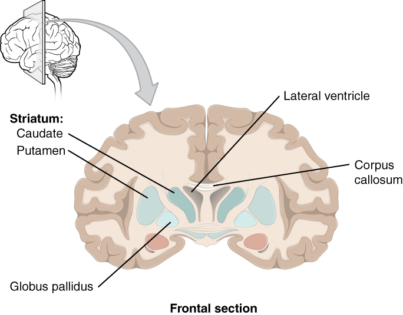
The basal nuclei in the cerebrum are connected with a few more nuclei in the brain stem that together act as a functional group that forms a motor pathway. Two streams of information processing take place in the basal nuclei. All input to the basal nuclei is from the cortex into the striatum (Figure \(\PageIndex{5}\) ). Thedirect pathwayis the projection of axons from the striatum to the globus pallidus internal segment (GPi) and thesubstantia nigra pars reticulata(SNr). The GPi/SNr then projects to the thalamus, which projects back to the cortex. Theindirect pathwayis the projection of axons from the striatum to the globus pallidus external segment (GPe), then to the subthalamic nucleus (STN), and finally to GPi/SNr. The two streams both target the GPi/SNr, but one has a direct projection and the other goes through a few intervening nuclei. The direct pathway causes thedisinhibitionof the thalamus (inhibition of one cell on a target cell that then inhibits the first cell), whereas the indirect pathway causes, or reinforces, the normal inhibition of the thalamus. The thalamus then can either excite the cortex (as a result of the direct pathway) or fail to excite the cortex (as a result of the indirect pathway).
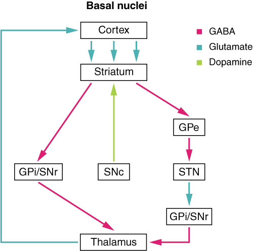
The switch between the two pathways is thesubstantia nigra pars compacta, which projects to the striatum and releases the neurotransmitter dopamine. Dopamine receptors are either excitatory (D1-type receptors) or inhibitory (D2-type receptors). The direct pathway is activated by dopamine, and the indirect pathway is inhibited by dopamine. When the substantia nigra pars compacta is firing, it signals to the basal nuclei that the body is in an active state, and movement will be more likely. When the substantia nigra pars compacta is silent, the body is in a passive state, and movement is inhibited. To illustrate this situation, while a student is sitting listening to a lecture, the substantia nigra pars compacta would be silent and the student less likely to get up and walk around. Likewise, while the professor is lecturing, and walking around at the front of the classroom, the professor’s substantia nigra pars compacta would be active, in keeping with their activity level.
Watch thisvideoto learn about the basal nuclei (also known as the basal ganglia), which have two pathways that process information within the cerebrum. As shown in this video, the direct pathway is the shorter pathway through the system that results in increased activity in the cerebral cortex and increased motor activity. The direct pathway is described as resulting in “disinhibition” of the thalamus. What does disinhibition mean? What are the two neurons doing individually to cause this?
Watch thisvideoto learn about the basal nuclei (also known as the basal ganglia), which have two pathways that process information within the cerebrum. As shown in this video, the indirect pathway is the longer pathway through the system that results in decreased activity in the cerebral cortex, and therefore less motor activity. The indirect pathway has an extra couple of connections in it, including disinhibition of the subthalamic nucleus. What is the end result on the thalamus, and therefore on movement initiated by the cerebral cortex?
#### The Myth of Left Brain/Right Brain
There is a persistent myth that people are “right-brained” or “left-brained,” which is an oversimplification of an important concept about the cerebral hemispheres. There is some lateralization of function, in which the left side of the brain is devoted to language function and the right side is devoted to spatial and nonverbal reasoning. Whereas these functions are predominantly associated with those sides of the brain, there is no monopoly by either side on these functions. Many pervasive functions, such as language, are distributed globally around the cerebrum.
Some of the support for this misconception has come from studies of split brains. A drastic way to deal with a rare and devastating neurological condition (intractable epilepsy) is to separate the two hemispheres of the brain. After sectioning the corpus callosum, a split-brained patient will have trouble producing verbal responses on the basis of sensory information processed on the right side of the cerebrum, leading to the idea that the left side is responsible for language function.
However, there are well-documented cases of language functions lost from damage to the right side of the brain. The deficits seen in damage to the left side of the brain are classified as aphasia, a loss of speech function; damage on the right side can affect the use of language. Right-side damage can result in a loss of ability to understand figurative aspects of speech, such as jokes, irony, or metaphors. Nonverbal aspects of speech can be affected by damage to the right side, such as facial expression or body language, and right-side damage can lead to a “flat affect” in speech, or a loss of emotional expression in speech—sounding like a robot when talking.
The diencephalon is the one region of the adult brain that retains its name from embryologic development. The etymology of the word diencephalon translates to “through brain.” It is the connection between the cerebrum and the rest of the nervous system, with one exception. The rest of the brain, the spinal cord, and the PNS all send information to the cerebrum through the diencephalon. Output from the cerebrum passes through the diencephalon. The single exception is the system associated witholfaction, or the sense of smell, which connects directly with the cerebrum. In the earliest vertebrate species, the cerebrum was not much more than olfactory bulbs that received peripheral information about the chemical environment (to call it smell in these organisms is imprecise because they lived in the ocean).
The diencephalon is deep beneath the cerebrum and constitutes the walls of the third ventricle. The diencephalon can be described as any region of the brain with “thalamus” in its name. The two major regions of the diencephalon are the thalamus itself and the hypothalamus (Figure \(\PageIndex{6}\)). There are other structures, such as theepithalamus, which contains the pineal gland, or thesubthalamus, which includes the subthalamic nucleus that is part of the basal nuclei.
Thethalamusis a collection of nuclei that relay information between the cerebral cortex and the periphery, spinal cord, or brain stem. All sensory information, except for the sense of smell, passes through the thalamus before processing by the cortex. Axons from the peripheral sensory organs, or intermediate nuclei, synapse in the thalamus, and thalamic neurons project directly to the cerebrum. It is a requisite synapse in any sensory pathway, except for olfaction. The thalamus does not just pass the information on, it also processes that information. For example, the portion of the thalamus that receives visual information will influence what visual stimuli are important, or what receives attention.
The cerebrum also sends information down to the thalamus, which usually communicates motor commands. This involves interactions with the cerebellum and other nuclei in the brain stem. The cerebrum interacts with the basal nuclei, which involves connections with the thalamus. The primary output of the basal nuclei is to the thalamus, which relays that output to the cerebral cortex. The cortex also sends information to the thalamus that will then influence the effects of the basal nuclei.
Inferior and slightly anterior to the thalamus is thehypothalamus, the other major region of the diencephalon. The hypothalamus is a collection of nuclei that are largely involved in regulating homeostasis. The hypothalamus is the executive region in charge of the autonomic nervous system and the endocrine system through its regulation of the anterior pituitary gland. Other parts of the hypothalamus are involved in memory and emotion as part of the limbic system.
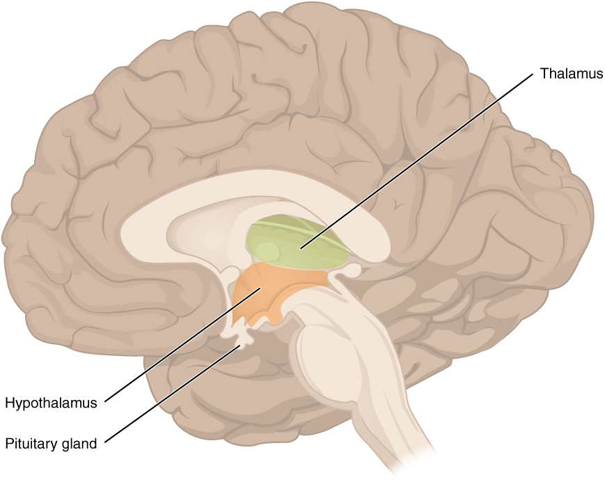
The midbrain and hindbrain (composed of the pons and the medulla) are collectively referred to as the brain stem (Figure \(\PageIndex{7}\)). The structure emerges from the ventral surface of the forebrain as a tapering cone that connects the brain to the spinal cord. Attached to the brain stem, but considered a separate region of the adult brain, is the cerebellum. The midbrain coordinates sensory representations of the visual, auditory, and somatosensory perceptual spaces. The pons is the main connection with the cerebellum. The pons and the medulla regulate several crucial functions, including the cardiovascular and respiratory systems and rates.
The cranial nerves connect through the brain stem and provide the brain with the sensory input and motor output associated with the head and neck, including most of the special senses. The major ascending and descending pathways between the spinal cord and brain, specifically the cerebrum, pass through the brain stem.

One of the original regions of the embryonic brain, the midbrain is a small region between the thalamus and pons. It is separated into thetectumandtegmentum, from the Latin words for roof and floor, respectively. The cerebral aqueduct passes through the center of the midbrain, such that these regions are the roof and floor of that canal.
The tectum is composed of four bumps known as the colliculi (singular = colliculus), which means “little hill” in Latin. Theinferior colliculusis the inferior pair of these enlargements and is part of the auditory brain stem pathway. Neurons of the inferior colliculus project to the thalamus, which then sends auditory information to the cerebrum for the conscious perception of sound. Thesuperior colliculusis the superior pair and combines sensory information about visual space, auditory space, and somatosensory space. Activity in the superior colliculus is related to orienting the eyes to a sound or touch stimulus. If you are walking along the sidewalk on campus and you hear chirping, the superior colliculus coordinates that information with your awareness of the visual location of the tree right above you. That is the correlation of auditory and visual maps. If you suddenly feel something wet fall on your head, your superior colliculus integrates that with the auditory and visual maps and you know that the chirping bird just relieved itself on you. You want to look up to see the culprit, but do not.
The tegmentum is continuous with the gray matter of the rest of the brain stem. Throughout the midbrain, pons, and medulla, the tegmentum contains the nuclei that receive and send information through the cranial nerves, as well as regions that regulate important functions such as those of the cardiovascular and respiratory systems.
The word pons comes from the Latin word for bridge. It is visible on the anterior surface of the brain stem as the thick bundle of white matter attached to the cerebellum. The pons is the main connection between the cerebellum and the brain stem. The bridge-like white matter is only the anterior surface of the pons; the gray matter beneath that is a continuation of the tegmentum from the midbrain. Gray matter in the tegmentum region of the pons contains neurons receiving descending input from the forebrain that is sent to the cerebellum.
The medulla is the region known as the myelencephalon in the embryonic brain. The initial portion of the name, “myel,” refers to the significant white matter found in this region—especially on its exterior, which is continuous with the white matter of the spinal cord. The tegmentum of the midbrain and pons continues into the medulla because this gray matter is responsible for processing cranial nerve information. A diffuse region of gray matter throughout the brain stem, known as thereticular formation, is related to sleep and wakefulness, such as general brain activity and attention.
Thecerebellum, as the name suggests, is the “little brain.” It is covered in gyri and sulci like the cerebrum, and looks like a miniature version of that part of the brain (Figure \(\PageIndex{8}\)). The cerebellum is largely responsible for comparing information from the cerebrum with sensory feedback from the periphery through the spinal cord. It accounts for approximately 10 percent of the mass of the brain.

Descending fibers from the cerebrum have branches that connect to neurons in the pons. Those neurons project into the cerebellum, providing a copy of motor commands sent to the spinal cord. Sensory information from the periphery, which enters through spinal or cranial nerves, is copied to a nucleus in the medulla known as theinferior olive. Fibers from this nucleus enter the cerebellum and are compared with the descending commands from the cerebrum. If the primary motor cortex of the frontal lobe sends a command down to the spinal cord to initiate walking, a copy of that instruction is sent to the cerebellum. Sensory feedback from the muscles and joints, proprioceptive information about the movements of walking, and sensations of balance are sent to the cerebellum through the inferior olive and the cerebellum compares them. If walking is not coordinated, perhaps because the ground is uneven or a strong wind is blowing, then the cerebellum sends out a corrective command to compensate for the difference between the original cortical command and the sensory feedback. The output of the cerebellum is into the midbrain, which then sends a descending input to the spinal cord to correct the messages going to skeletal muscles.
The description of the CNS is concentrated on the structures of the brain, but the spinal cord is another major organ of the system. Whereas the brain develops out of expansions of the neural tube into primary and then secondary vesicles, the spinal cord maintains the tube structure and is only specialized into certain regions. As the spinal cord continues to develop in the newborn, anatomical features mark its surface. The anterior midline is marked by theanterior median fissure, and the posterior midline is marked by theposterior median sulcus. Axons enter the posterior side through thedorsal (posterior) nerve root, which marks theposterolateral sulcuson either side. The axons emerging from the anterior side do so through theventral (anterior) nerve root. Note that it is common to see the terms dorsal (dorsal = “back”) and ventral (ventral = “belly”) used interchangeably with posterior and anterior, particularly in reference to nerves and the structures of the spinal cord. You should learn to be comfortable with both.
On the whole, the posterior regions are responsible for sensory functions and the anterior regions are associated with motor functions. This comes from the initial development of the spinal cord, which is divided into thebasal plateand thealar plate. The basal plate is closest to the ventral midline of the neural tube, which will become the anterior face of the spinal cord and gives rise to motor neurons. The alar plate is on the dorsal side of the neural tube and gives rise to neurons that will receive sensory input from the periphery.
The length of the spinal cord is divided into regions that correspond to the regions of the vertebral column. The name of a spinal cord region corresponds to the level at which spinal nerves pass through the intervertebral foramina. Immediately adjacent to the brain stem is the cervical region, followed by the thoracic, then the lumbar, and finally the sacral region. The spinal cord is not the full length of the vertebral column because the spinal cord does not grow significantly longer after the first or second year, but the skeleton continues to grow. The nerves that emerge from the spinal cord pass through the intervertebral foramina at the respective levels. As the vertebral column grows, these nerves grow with it and result in a long bundle of nerves that resembles a horse’s tail and is named thecauda equina. The sacral spinal cord is at the level of the upper lumbar vertebral bones. The spinal nerves extend from their various levels to the proper level of the vertebral column.
In cross-section, the gray matter of the spinal cord has the appearance of an ink-blot test, with the spread of the gray matter on one side replicated on the other—a shape reminiscent of a bulbous capital “H.” As shown in Figure \(\PageIndex{9}\), the gray matter is subdivided into regions that are referred to as horns. Theposterior hornis responsible for sensory processing. Theanterior hornsends out motor signals to the skeletal muscles. Thelateral horn, which is only found in the thoracic, upper lumbar, and sacral regions, contains cell bodies of motor neurons of the autonomic nervous system.
Some of the largest neurons of the spinal cord are the multipolar motor neurons in the anterior horn. The fibers that cause contraction of skeletal muscles are the axons of these neurons. The motor neuron that causes contraction of the big toe, for example, is located in the sacral spinal cord. The axon that has to reach all the way to the belly of that muscle may be a meter in length. The neuronal cell body that maintains that long fiber must be quite large, possibly several hundred micrometers in diameter, making it one of the largest cells in the body.
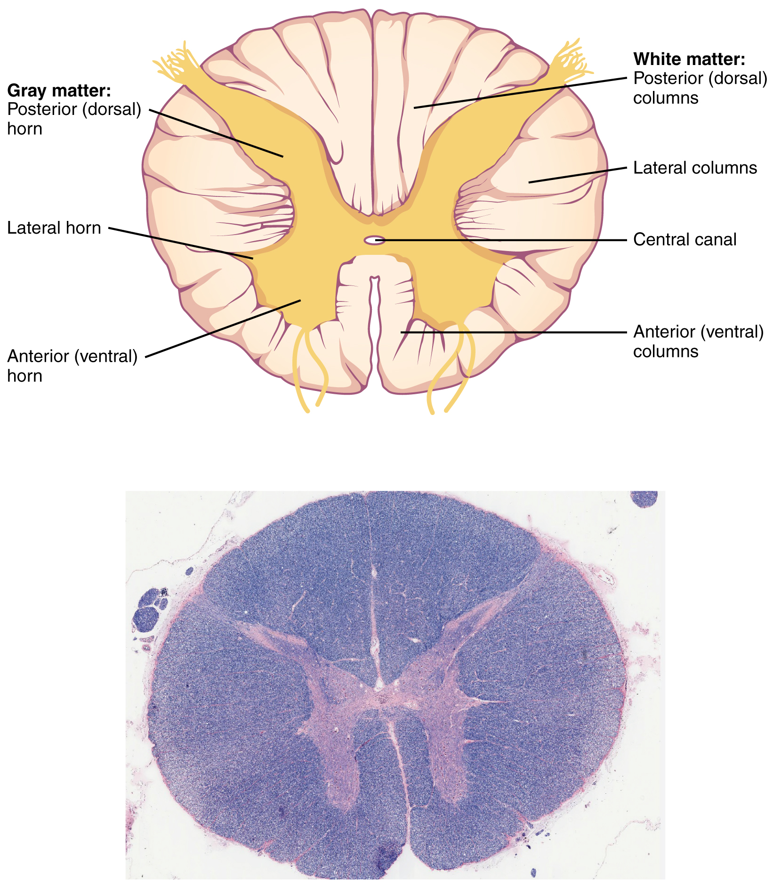
Just as the gray matter is separated into horns, the white matter of the spinal cord is separated into columns.Ascending tractsof nervous system fibers in these columns carry sensory information up to the brain, whereasdescending tractscarry motor commands from the brain. Looking at the spinal cord longitudinally, the columns extend along its length as continuous bands of white matter. Between the two posterior horns of gray matter are theposterior columns. Between the two anterior horns, and bounded by the axons of motor neurons emerging from that gray matter area, are theanterior columns. The white matter on either side of the spinal cord, between the posterior horn and the axons of the anterior horn neurons, are thelateral columns. The posterior columns are composed of axons of ascending tracts. The anterior and lateral columns are composed of many different groups of axons of both ascending and descending tracts—the latter carrying motor commands down from the brain to the spinal cord to control output to the periphery.
Watch thisvideoto learn about the gray matter of the spinal cord that receives input from fibers of the dorsal (posterior) root and sends information out through the fibers of the ventral (anterior) root. As discussed in this video, these connections represent the interactions of the CNS with peripheral structures for both sensory and motor functions. The cervical and lumbar spinal cords have enlargements as a result of larger populations of neurons. What are these enlargements responsible for?
Parkinson’s disease is a disorder of the basal nuclei, specifically of the substantia nigra, that demonstrates the effects of the direct and indirect pathways. Parkinson’s disease is the result of neurons in the substantia nigra pars compacta dying. These neurons release dopamine into the striatum. Without that modulatory influence, the basal nuclei are stuck in the indirect pathway, without the direct pathway being activated. The direct pathway is responsible for increasing cortical movement commands. The increased activity of the indirect pathway results in the hypokinetic disorder of Parkinson’s disease.
Parkinson’s disease is neurodegenerative, meaning that neurons die that cannot be replaced, so there is no cure for the disorder. Treatments for Parkinson’s disease are aimed at increasing dopamine levels in the striatum. Currently, the most common way of doing that is by providing the amino acid L-DOPA, which is a precursor to the neurotransmitter dopamine and can cross the blood-brain barrier. With levels of the precursor elevated, the remaining cells of the substantia nigra pars compacta can make more neurotransmitter and have a greater effect. Unfortunately, the patient will become less responsive to L-DOPA treatment as time progresses, and it can cause increased dopamine levels elsewhere in the brain, which are associated with psychosis or schizophrenia.
Visitthis sitefor a thorough explanation of Parkinson’s disease.
Compared with the nearest evolutionary relative, the chimpanzee, the human has a brain that is huge. At a point in the past, a common ancestor gave rise to the two species of humans and chimpanzees. That evolutionary history is long and is still an area of intense study. But something happened to increase the size of the human brain relative to the chimpanzee.Read this articlein which the author explores the current understanding of why this happened.
According to one hypothesis about the expansion of brain size, what tissue might have been sacrificed so energy was available to grow our larger brain? Based on what you know about that tissue and nervous tissue, why would there be a trade-off between them in terms of energy use?
📖 OpenStax Anatomy & Physiology 2e, Section 13.3. openstax.org · CC BY 4.0
- Describe the vessels that supply the CNS with blood
- Name the components of the ventricular system and the regions of the brain in which each is located
- Explain the production of cerebrospinal fluid and its flow through the ventricles
- Explain how a disruption in circulation would result in a stroke
The CNS is crucial to the operation of the body, and any compromise in the brain and spinal cord can lead to severe difficulties. The CNS has a privileged blood supply, as suggested by the blood-brain barrier. The function of the tissue in the CNS is crucial to the survival of the organism, so the contents of the blood cannot simply pass into the central nervous tissue. To protect this region from the toxins and pathogens that may be traveling through the blood stream, there is strict control over what can move out of the general systems and into the brain and spinal cord. Because of this privilege, the CNS needs specialized structures for the maintenance of circulation. This begins with a unique arrangement of blood vessels carrying fresh blood into the CNS. Beyond the supply of blood, the CNS filters that blood into cerebrospinal fluid (CSF), which is then circulated through the cavities of the brain and spinal cord called ventricles.
A lack of oxygen to the CNS can be devastating, and the cardiovascular system has specific regulatory reflexes to ensure that the blood supply is not interrupted. There are multiple routes for blood to get into the CNS, with specializations to protect that blood supply and to maximize the ability of the brain to get an uninterrupted perfusion.
The major artery carrying recently oxygenated blood away from the heart is the aorta. The very first branches off the aorta supply the heart with nutrients and oxygen. The next branches give rise to thecommon carotid arteries, which further branch into theinternal carotid arteries. The external carotid arteries supply blood to the tissues on the surface of the cranium. The bases of the common carotids contain stretch receptors that immediately respond to the drop in blood pressure upon standing. Theorthostatic reflexis a reaction to this change in body position, so that blood pressure is maintained against the increasing effect of gravity (orthostatic means “standing up”). Heart rate increases—a reflex of the sympathetic division of the autonomic nervous system—and this raises blood pressure.
The internal carotid artery enters the cranium through thecarotid canalin the temporal bone. A second set of vessels that supply the CNS are thevertebral arteries, which are protected as they pass through the neck region by the transverse foramina of the cervical vertebrae. The vertebral arteries enter the cranium through theforamen magnumof the occipital bone. Branches off the left and right vertebral arteries merge into theanterior spinal arterysupplying the anterior aspect of the spinal cord, found along the anterior median fissure. The two vertebral arteries then merge into thebasilar artery, which gives rise to branches to the brain stem and cerebellum. The left and right internal carotid arteries and branches of the basilar artery all become thecircle of Willis, a confluence of arteries that can maintain perfusion of the brain even if narrowing or a blockage limits flow through one part (Figure \(\PageIndex{1}\)).
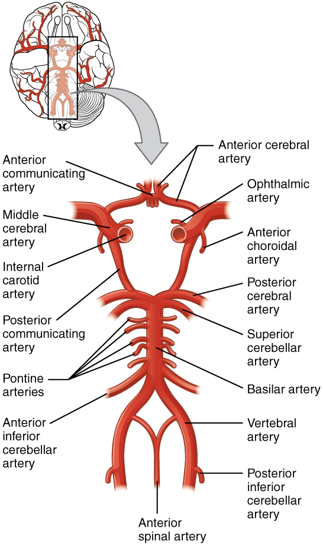
Watch thisanimationto see how blood flows to the brain and passes through the circle of Willis before being distributed through the cerebrum. The circle of Willis is a specialized arrangement of arteries that ensure constant perfusion of the cerebrum even in the event of a blockage of one of the arteries in the circle. The animation shows the normal direction of flow through the circle of Willis to the middle cerebral artery. Where would the blood come from if there were a blockage just posterior to the middle cerebral artery on the left?
After passing through the CNS, blood returns to the circulation through a series ofdural sinusesand veins (Figure \(\PageIndex{2}\)). Thesuperior sagittal sinusruns in the groove of the longitudinal fissure, where it absorbs CSF from the meninges. The superior sagittal sinus drains to the confluence of sinuses, along with theoccipital sinusesandstraight sinus, to then drain into thetransverse sinuses. The transverse sinuses connect to thesigmoid sinuses, which then connect to thejugular veins. From there, the blood continues toward the heart to be pumped to the lungs for reoxygenation.
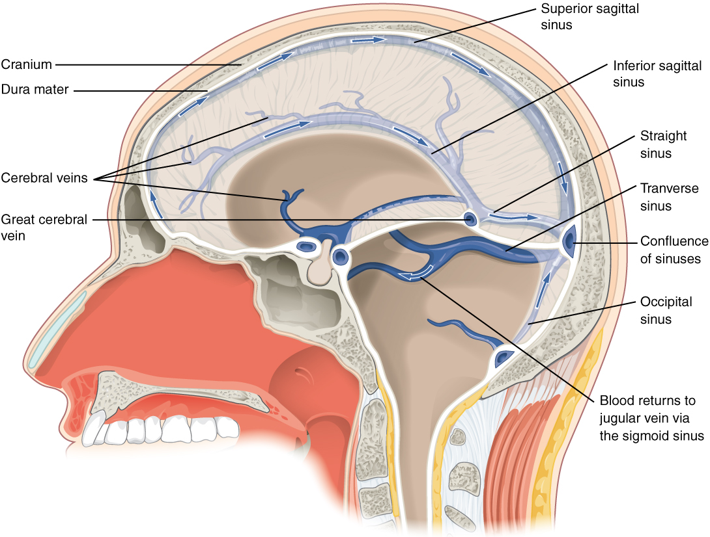
The outer surface of the CNS is covered by a series of membranes composed of connective tissue called themeninges, which protect the brain. Thedura materis a thick fibrous layer and a strong protective sheath over the entire brain and spinal cord. It is anchored to the inner surface of the cranium and vertebral cavity. Thearachnoid materis a membrane of thin fibrous tissue that forms a loose sac around the CNS. Beneath the arachnoid is a thin, filamentous mesh called thearachnoid trabeculae, which looks like a spider web, giving this layer its name. Directly adjacent to the surface of the CNS is thepia mater, a thin fibrous membrane that follows the convolutions of gyri and sulci in the cerebral cortex and fits into other grooves and indentations (Figure \(\PageIndex{3}\)).
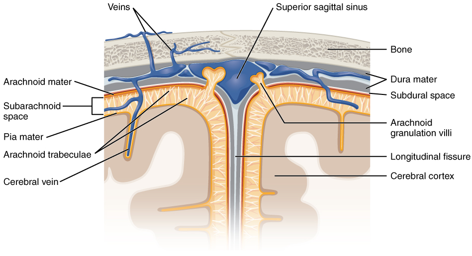
Like a thick cap covering the brain, the dura mater is a tough outer covering. The name comes from the Latin for “tough mother” to represent its physically protective role. It encloses the entire CNS and the major blood vessels that enter the cranium and vertebral cavity. It is directly attached to the inner surface of the bones of the cranium and to the very end of the vertebral cavity.
There are infoldings of the dura that fit into large crevasses of the brain. Two infoldings go through the midline separations of the cerebrum and cerebellum; one forms a shelf-like tent between the occipital lobes of the cerebrum and the cerebellum, and the other surrounds the pituitary gland. The dura also surrounds and supports the venous sinuses.
The middle layer of the meninges is the arachnoid, named for the spider-web–like trabeculae between it and the pia mater. The arachnoid defines a sac-like enclosure around the CNS. The trabeculae are found in thesubarachnoid space, which is filled with circulating CSF. The arachnoid emerges into the dural sinuses as thearachnoid granulations, where the CSF is filtered back into the blood for drainage from the nervous system.
The subarachnoid space is filled with circulating CSF, which also provides a liquid cushion to the brain and spinal cord. Similar to clinical blood work, a sample of CSF can be withdrawn to find chemical evidence of neuropathology or metabolic traces of the biochemical functions of nervous tissue.
The outer surface of the CNS is covered in the thin fibrous membrane of the pia mater. It is thought to have a continuous layer of cells providing a fluid-impermeable membrane. The name pia mater comes from the Latin for “tender mother,” suggesting the thin membrane is a gentle covering for the brain. The pia extends into every convolution of the CNS, lining the inside of the sulci in the cerebral and cerebellar cortices. At the end of the spinal cord, a thin filament extends from the inferior end of CNS at the upper lumbar region of the vertebral column to the sacral end of the vertebral column. Because the spinal cord does not extend through the lower lumbar region of the vertebral column, a needle can be inserted through the dura and arachnoid layers to withdraw CSF. This procedure is called alumbar punctureand avoids the risk of damaging the central tissue of the spinal cord. Blood vessels that are nourishing the central nervous tissue are between the pia mater and the nervous tissue.
Meningitis is an inflammation of the meninges, the three layers of fibrous membrane that surround the CNS. Meningitis can be caused by infection by bacteria or viruses. The particular pathogens are not special to meningitis; it is just an inflammation of that specific set of tissues from what might be a broader infection. Bacterial meningitis can be caused byStreptococcus,Staphylococcus, or the tuberculosis pathogen, among many others. Viral meningitis is usually the result of common enteroviruses (such as those that cause intestinal disorders), but may be the result of the herpes virus or West Nile virus. Bacterial meningitis tends to be more severe.
The symptoms associated with meningitis can be fever, chills, nausea, vomiting, light sensitivity, soreness of the neck, or severe headache. More important are the neurological symptoms, such as changes in mental state (confusion, memory deficits, and other dementia-type symptoms). A serious risk of meningitis can be damage to peripheral structures because of the nerves that pass through the meninges. Hearing loss is a common result of meningitis.
The primary test for meningitis is a lumbar puncture. A needle inserted into the lumbar region of the spinal column through the dura mater and arachnoid membrane into the subarachnoid space can be used to withdraw the fluid for chemical testing. Fatality occurs in 5 to 40 percent of children and 20 to 50 percent of adults with bacterial meningitis. Treatment of bacterial meningitis is through antibiotics, but viral meningitis cannot be treated with antibiotics because viruses do not respond to that type of drug. Fortunately, the viral forms are milder.
Watch thisvideothat describes the procedure known as the lumbar puncture, a medical procedure used to sample the CSF. Because of the anatomy of the CNS, it is a relative safe location to insert a needle. Why is the lumbar puncture performed in the lower lumbar area of the vertebral column?
Cerebrospinal fluid (CSF) circulates throughout and around the CNS. In other tissues, water and small molecules are filtered through capillaries as the major contributor to the interstitial fluid. In the brain, CSF is produced in special structures to perfuse through the nervous tissue of the CNS and is continuous with the interstitial fluid. Specifically, CSF circulates to remove metabolic wastes from the interstitial fluids of nervous tissues and return them to the blood stream. Theventriclesare the open spaces within the brain where CSF circulates. In some of these spaces, CSF is produced by filtering of the blood that is performed by a specialized membrane known as a choroid plexus. The CSF circulates through all of the ventricles to eventually emerge into the subarachnoid space where it will be reabsorbed into the blood.
There are four ventricles within the brain, all of which developed from the original hollow space within the neural tube, thecentral canal. The first two are named thelateral ventriclesand are deep within the cerebrum. These ventricles are connected to thethird ventricleby two openings called theinterventricular foramina. The third ventricle is the space between the left and right sides of the diencephalon, which opens into thecerebral aqueductthat passes through the midbrain. The aqueduct opens into thefourth ventricle, which is the space between the cerebellum and the pons and upper medulla (Figure \(\PageIndex{4}\)).
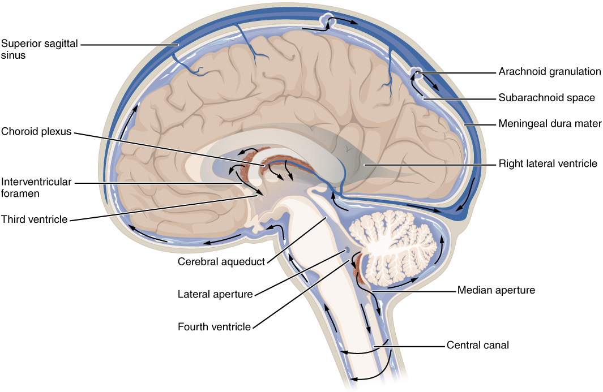
As the telencephalon enlarges and grows into the cranial cavity, it is limited by the space within the skull. The telencephalon is the most anterior region of what was the neural tube, but cannot grow past the limit of the frontal bone of the skull. Because the cerebrum fits into this space, it takes on a C-shaped formation, through the frontal, parietal, occipital, and finally temporal regions. The space within the telencephalon is stretched into this same C-shape. The two ventricles are in the left and right sides, and were at one time referred to as the first and second ventricles. The interventricular foramina connect the frontal region of the lateral ventricles with the third ventricle.
The third ventricle is the space bounded by the medial walls of the hypothalamus and thalamus. The two thalami touch in the center in most brains as the massa intermedia, which is surrounded by the third ventricle. The cerebral aqueduct opens just inferior to the epithalamus and passes through the midbrain. The tectum and tegmentum of the midbrain are the roof and floor of the cerebral aqueduct, respectively. The aqueduct opens up into the fourth ventricle. The floor of the fourth ventricle is the dorsal surface of the pons and upper medulla (that gray matter making a continuation of the tegmentum of the midbrain). The fourth ventricle then narrows into the central canal of the spinal cord.
The ventricular system opens up to the subarachnoid space from the fourth ventricle. The singlemedian apertureand the pair oflateral aperturesconnect to the subarachnoid space so that CSF can flow through the ventricles and around the outside of the CNS. Cerebrospinal fluid is produced within the ventricles by a type of specialized membrane called achoroid plexus. Ependymal cells (one of the types of glial cells described in the introduction to the nervous system) surround blood capillaries and filter the blood to make CSF. The fluid is a clear solution with a limited amount of the constituents of blood. It is essentially water, small molecules, and electrolytes. Oxygen and carbon dioxide are dissolved into the CSF, as they are in blood, and can diffuse between the fluid and the nervous tissue.
#### Cerebrospinal Fluid Circulation
The choroid plexuses are found in all four ventricles. Observed in dissection, they appear as soft, fuzzy structures that may still be pink, depending on how well the circulatory system is cleared in preparation of the tissue. The CSF is produced from components extracted from the blood, so its flow out of the ventricles is tied to the pulse of cardiovascular circulation.
From the lateral ventricles, the CSF flows into the third ventricle, where more CSF is produced, and then through the cerebral aqueduct into the fourth ventricle where even more CSF is produced. A very small amount of CSF is filtered at any one of the plexuses, for a total of about 500 milliliters daily, but it is continuously made and pulses through the ventricular system, keeping the fluid moving. From the fourth ventricle, CSF can continue down the central canal of the spinal cord, but this is essentially a cul-de-sac, so more of the fluid leaves the ventricular system and moves into the subarachnoid space through the median and lateral apertures.
Within the subarachnoid space, the CSF flows around all of the CNS, providing two important functions. As with elsewhere in its circulation, the CSF picks up metabolic wastes from the nervous tissue and moves it out of the CNS. It also acts as a liquid cushion for the brain and spinal cord. By surrounding the entire system in the subarachnoid space, it provides a thin buffer around the organs within the strong, protective dura mater. The arachnoid granulations are outpocketings of the arachnoid membrane into the dural sinuses so that CSF can be reabsorbed into the blood, along with the metabolic wastes. From the dural sinuses, blood drains out of the head and neck through the jugular veins, along with the rest of the circulation for blood, to be reoxygenated by the lungs and wastes to be filtered out by the kidneys (Table \(\PageIndex{1}\)).
Watch thisanimationthat shows the flow of CSF through the brain and spinal cord, and how it originates from the ventricles and then spreads into the space within the meninges, where the fluids then move into the venous sinuses to return to the cardiovascular circulation. What are the structures that produce CSF and where are they found? How are the structures indicated in this animation?
| Lateral ventricles | Third ventricle | Cerebral aqueduct | Fourth ventricle | Central canal | Subarachnoid space | |
|---|---|---|---|---|---|---|
| Location in CNS | Cerebrum | Diencephalon | Midbrain | Between pons/upper medulla and cerebellum | Spinal cord | External to entire CNS |
| Blood vessel structure | Choroid plexus | Choroid plexus | None | Choroid plexus | None | Arachnoid granulations |
#### Central Nervous System
The supply of blood to the brain is crucial to its ability to perform many functions. Without a steady supply of oxygen, and to a lesser extent glucose, the nervous tissue in the brain cannot keep up its extensive electrical activity. These nutrients get into the brain through the blood, and if blood flow is interrupted, neurological function is compromised.
The common name for a disruption of blood supply to the brain is a stroke. It is caused by a blockage to an artery in the brain. The blockage is from some type of embolus: a blood clot, a fat embolus, or an air bubble. When the blood cannot travel through the artery, the surrounding tissue that is deprived starves and dies. Strokes will often result in the loss of very specific functions. A stroke in the lateral medulla, for example, can cause a loss in the ability to swallow. Sometimes, seemingly unrelated functions will be lost because they are dependent on structures in the same region. Along with the swallowing in the previous example, a stroke in that region could affect sensory functions from the face or extremities because important white matter pathways also pass through the lateral medulla. Loss of blood flow to specific regions of the cortex can lead to the loss of specific higher functions, from the ability to recognize faces to the ability to move a particular region of the body. Severe or limited memory loss can be the result of a temporal lobe stroke.
Related to strokes are transient ischemic attacks (TIAs), which can also be called “mini-strokes.” These are events in which a physical blockage may be temporary, cutting off the blood supply and oxygen to a region, but not to the extent that it causes cell death in that region. While the neurons in that area are recovering from the event, neurological function may be lost. Function can return if the area is able to recover from the event.
Recovery from a stroke (or TIA) is strongly dependent on the speed of treatment. Often, the person who is present and notices something is wrong must then make a decision. The mnemonicFASThelps people remember what to look for when someone is dealing with sudden losses of neurological function. If someone complains of feeling “funny,” check these things quickly: Look at the person’s face. Do they have problems movingFace muscles and making regular facial expressions? Ask the person to raise theirArms above the head. Can the person lift one arm but not the other? Has the person’sSpeech changed? Are they slurring words or having trouble saying things? If any of these things have happened, then it isTime to call for help.
Sometimes, treatment with blood-thinning drugs can alleviate the problem, and recovery is possible. If the tissue is damaged, the amazing thing about the nervous system is that it is adaptable. With physical, occupational, and speech therapy, victims of strokes can recover, or more accurately relearn, functions.
📖 OpenStax Anatomy & Physiology 2e, Section 13.4. openstax.org · CC BY 4.0
- Describe the structures found in the PNS
- Distinguish between somatic and autonomic structures, including the special peripheral structures of the enteric nervous system
- Name the twelve cranial nerves and explain the functions associated with each
- Describe the sensory and motor components of spinal nerves and the plexuses that they pass through
The PNS is not as contained as the CNS because it is defined as everything that is not the CNS. Some peripheral structures are incorporated into the other organs of the body. In describing the anatomy of the PNS, it is necessary to describe the common structures, the nerves and the ganglia, as they are found in various parts of the body. Many of the neural structures that are incorporated into other organs are features of the digestive system; these structures are known as theenteric nervous systemand are a special subset of the PNS.
A ganglion is a group of neuron cell bodies in the periphery. Ganglia can be categorized, for the most part, as either sensory ganglia or autonomic ganglia, referring to their primary functions. The most common type of sensory ganglion is adorsal (posterior) root ganglion. These ganglia are the cell bodies of neurons with axons that are sensory endings in the periphery, such as in the skin, and that extend into the CNS through the dorsal nerve root. The ganglion is an enlargement of the nerve root. Under microscopic inspection, it can be seen to include the cell bodies of the neurons, as well as bundles of fibers that are the posterior nerve root (Figure \(\PageIndex{1}\) ). The cells of the dorsal root ganglion are unipolar cells, classifying them by shape. Also, the small round nuclei of satellite cells can be seen surrounding—as if they were orbiting—the neuron cell bodies.
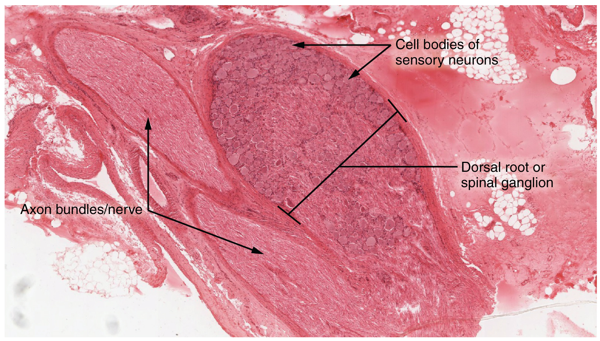
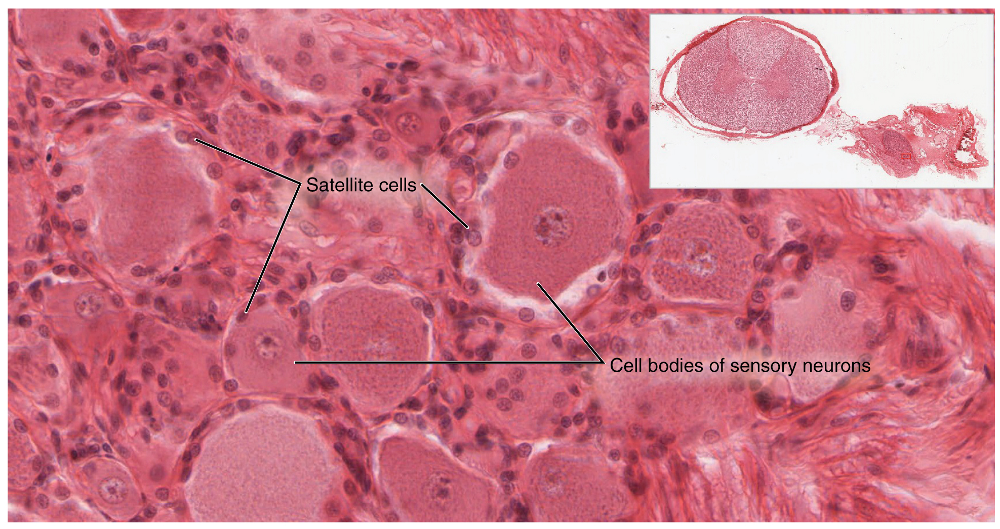
View theUniversity of Michigan WebScopeto explore the tissue sample in greater detail. If you zoom in on the dorsal root ganglion, you can see smaller satellite glial cells surrounding the large cell bodies of the sensory neurons. From what structure do satellite cells derive during embryologic development?
Another type of sensory ganglion is acranial nerve ganglion. This is analogous to the dorsal root ganglion, except that it is associated with acranial nerveinstead of aspinal nerve. The roots of cranial nerves are within the cranium, whereas the ganglia are outside the skull. For example, thetrigeminal ganglionis superficial to the temporal bone whereas its associated nerve is attached to the mid-pons region of the brain stem. The neurons of cranial nerve ganglia are also unipolar in shape with associated satellite cells.
The other major category of ganglia are those of the autonomic nervous system, which is divided into the sympathetic and parasympathetic nervous systems. Thesympathetic chain gangliaconstitute a row of ganglia along the vertebral column that receive central input from the lateral horn of the thoracic and upper lumbar spinal cord. Superior to the chain ganglia are threeparavertebral gangliain the cervical region. Three other autonomic ganglia that are related to the sympathetic chain are theprevertebral ganglia, which are located outside of the chain but have similar functions. They are referred to as prevertebral because they are anterior to the vertebral column. The neurons of these autonomic ganglia are multipolar in shape, with dendrites radiating out around the cell body where synapses from the spinal cord neurons are made. The neurons of the chain, paravertebral, and prevertebral ganglia then project to organs in the head and neck, thoracic, abdominal, and pelvic cavities to regulate the sympathetic aspect of homeostatic mechanisms.
Another group of autonomic ganglia are theterminal gangliathat receive input from cranial nerves or sacral spinal nerves and are responsible for regulating the parasympathetic aspect of homeostatic mechanisms. These two sets of ganglia, sympathetic and parasympathetic, often project to the same organs—one input from the chain ganglia and one input from a terminal ganglion—to regulate the overall function of an organ. For example, the heart receives two inputs such as these; one increases heart rate, and the other decreases it. The terminal ganglia that receive input from cranial nerves are found in the head and neck, as well as the thoracic and upper abdominal cavities, whereas the terminal ganglia that receive sacral input are in the lower abdominal and pelvic cavities.
Terminal ganglia below the head and neck are often incorporated into the wall of the target organ as aplexus. A plexus, in a general sense, is a network of fibers or vessels. This can apply to nervous tissue (as in this instance) or structures containing blood vessels (such as a choroid plexus). For example, theenteric plexusis the extensive network of axons and neurons in the wall of the small and large intestines. The enteric plexus is actually part of the enteric nervous system, along with thegastric plexusesand theesophageal plexus. Though the enteric nervous system receives input originating from central neurons of the autonomic nervous system, it does not require CNS input to function. In fact, it operates independently to regulate the digestive system.
Bundles of axons in the PNS are referred to as nerves. These structures in the periphery are different than the central counterpart, called a tract. Nerves are composed of more than just nervous tissue. They have connective tissues invested in their structure, as well as blood vessels supplying the tissues with nourishment. The outer surface of a nerve is a surrounding layer of fibrous connective tissue called theepineurium. Within the nerve, axons are further bundled intofascicles, which are each surrounded by their own layer of fibrous connective tissue calledperineurium. Finally, individual axons are surrounded by loose connective tissue called theendoneurium(Figure \(\PageIndex{3}\)). These three layers are similar to the connective tissue sheaths for muscles. Nerves are associated with the region of the CNS to which they are connected, either as cranial nerves connected to the brain or spinal nerves connected to the spinal cord.
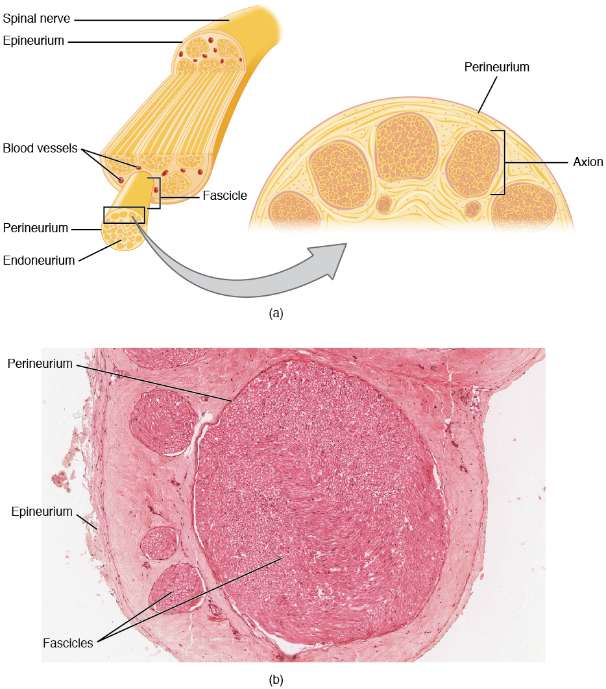
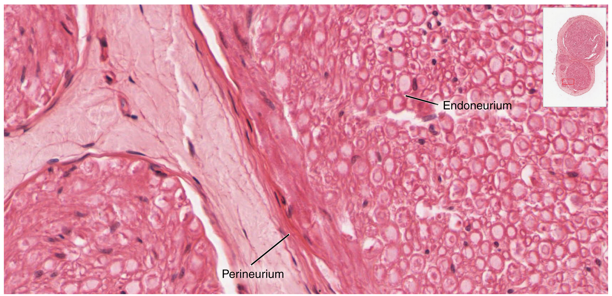
View theUniversity of Michigan WebScopeto explore the tissue sample in greater detail. With what structures in a skeletal muscle are the endoneurium, perineurium, and epineurium comparable?
The nerves attached to the brain are the cranial nerves, which are primarily responsible for the sensory and motor functions of the head and neck (one of these nerves targets organs in the thoracic and abdominal cavities as part of the parasympathetic nervous system). There are twelve cranial nerves, which are designated CNI through CNXII for “Cranial Nerve,” using Roman numerals for 1 through 12. They can be classified as sensory nerves, motor nerves, or a combination of both, meaning that the axons in these nerves originate out of sensory ganglia external to the cranium or motor nuclei within the brain stem. Sensory axons enter the brain to synapse in a nucleus. Motor axons connect to skeletal muscles of the head or neck. Three of the nerves are solely composed of sensory fibers; five are strictly motor; and the remaining four are mixed nerves.
Learning the cranial nerves is a tradition in anatomy courses, and students have always used mnemonic devices to remember the nerve names. A traditional mnemonic is the rhyming couplet, “On Old Olympus’ Towering Tops/A Finn And German Viewed Some Hops,” in which the initial letter of each word corresponds to the initial letter in the name of each nerve. The names of the nerves have changed over the years to reflect current usage and more accurate naming. An exercise to help learn this sort of information is to generate a mnemonic using words that have personal significance. The names of the cranial nerves are listed in Table 13.3 along with a brief description of their function, their source (sensory ganglion or motor nucleus), and their target (sensory nucleus or skeletal muscle). They are listed here with a brief explanation of each nerve (Figure \(\PageIndex{5}\)).
Theolfactory nerveandoptic nerveare responsible for the sense of smell and vision, respectively. Theoculomotor nerveis responsible for eye movements by controlling four of theextraocular muscles. It is also responsible for lifting the upper eyelid when the eyes point up, and for pupillary constriction. Thetrochlear nerveand theabducens nerveare both responsible for eye movement, but do so by controlling different extraocular muscles. Thetrigeminal nerveis responsible for cutaneous sensations of the face and controlling the muscles of mastication. Thefacial nerveis responsible for the muscles involved in facial expressions, as well as part of the sense of taste and the production of saliva. Thevestibulocochlear nerveis responsible for the senses of hearing and balance. Theglossopharyngeal nerveis responsible for controlling muscles in the oral cavity and upper throat, as well as part of the sense of taste and the production of saliva. Thevagus nerveis responsible for contributing to homeostatic control of the organs of the thoracic and upper abdominal cavities. Thespinal accessory nerveis responsible for controlling the muscles of the neck, along with cervical spinal nerves. Thehypoglossal nerveis responsible for controlling the muscles of the lower throat and tongue.
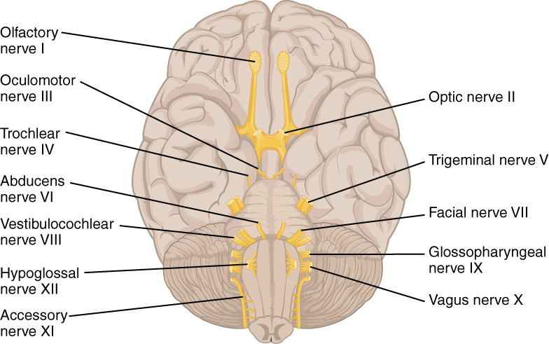
Three of the cranial nerves also contain autonomic fibers, and a fourth is almost purely a component of the autonomic system. The oculomotor, facial, and glossopharyngeal nerves contain fibers that contact autonomic ganglia. The oculomotor fibers initiate pupillary constriction, whereas the facial and glossopharyngeal fibers both initiate salivation. The vagus nerve primarily targets autonomic ganglia in the thoracic and upper abdominal cavities.
Visitthis siteto read about a man who wakes with a headache and a loss of vision. His regular doctor sent him to an ophthalmologist to address the vision loss. The ophthalmologist recognizes a greater problem and immediately sends him to the emergency room. Once there, the patient undergoes a large battery of tests, but a definite cause cannot be found. A specialist recognizes the problem as meningitis, but the question is what caused it originally. How can that be cured? The loss of vision comes from swelling around the optic nerve, which probably presented as a bulge on the inside of the eye. Why is swelling related to meningitis going to push on the optic nerve?
Another important aspect of the cranial nerves that lends itself to a mnemonic is the functional role each nerve plays. The nerves fall into one of three basic groups. They are sensory, motor, or both (see Table \(\PageIndex{1}\)). The sentence, “Some Say Marry Money But My Brother Says Brains Beauty Matter More,” corresponds to the basic function of each nerve. The first, second, and eighth nerves are purely sensory: the olfactory (CNI), optic (CNII), and vestibulocochlear (CNVIII) nerves. The three eye-movement nerves are all motor: the oculomotor (CNIII), trochlear (CNIV), and abducens (CNVI). The spinal accessory (CNXI) and hypoglossal (CNXII) nerves are also strictly motor. The remainder of the nerves contain both sensory and motor fibers. They are the trigeminal (CNV), facial (CNVII), glossopharyngeal (CNIX), and vagus (CNX) nerves. The nerves that convey both are often related to each other. The trigeminal and facial nerves both concern the face; one concerns the sensations and the other concerns the muscle movements. The facial and glossopharyngeal nerves are both responsible for conveying gustatory, or taste, sensations as well as controlling salivary glands. The vagus nerve is involved in visceral responses to taste, namely the gag reflex. This is not an exhaustive list of what these combination nerves do, but there is a thread of relation between them.
| Mnemonic | # | Name | Function (S/M/B) | Central connection (nuclei) | Peripheral connection (ganglion or muscle) |
|---|---|---|---|---|---|
| On | I | Olfactory | Smell (S) | Olfactory bulb | Olfactory epithelium |
| Old | II | Optic | Vision (S) | Hypothalamus/thalamus/midbrain | Retina (retinal ganglion cells) |
| Olympus’ | III | Oculomotor | Eye movements (M) | Oculomotor nucleus | Extraocular muscles (other 4), levator palpebrae superioris, ciliary ganglion (autonomic) |
| Towering | IV | Trochlear | Eye movements (M) | Trochlear nucleus | Superior oblique muscle |
| Tops | V | Trigeminal | Sensory/motor – face (B) | Trigeminal nuclei in the midbrain, pons, and medulla | Trigeminal |
| A | VI | Abducens | Eye movements (M) | Abducens nucleus | Lateral rectus muscle |
| Finn | VII | Facial | Motor – face, Taste (B) | Facial nucleus, solitary nucleus, superior salivatory nucleus | Facial muscles, Geniculate ganglion, Pterygopalatine ganglion (autonomic) |
| And | VIII | Auditory (Vestibulocochlear) | Hearing/balance (S) | Cochlear nucleus, Vestibular nucleus/cerebellum | Spiral ganglion (hearing), Vestibular ganglion (balance) |
| German | IX | Glossopharyngeal | Motor – throat Taste (B) | Solitary nucleus, inferior salivatory nucleus, nucleus ambiguus | Pharyngeal muscles, Geniculate ganglion, Otic ganglion (autonomic) |
| Viewed | X | Vagus | Motor/sensory – viscera (autonomic) (B) | Medulla | Terminal ganglia serving thoracic and upper abdominal organs (heart and small intestines) |
| Some | XI | Spinal Accessory | Motor – head and neck (M) | Spinal accessory nucleus | Neck muscles |
| Hops | XII | Hypoglossal | Motor – lower throat (M) | Hypoglossal nucleus | Muscles of the larynx and lower pharynx |
The nerves connected to the spinal cord are the spinal nerves. The arrangement of these nerves is much more regular than that of the cranial nerves. All of the spinal nerves are combined sensory and motor axons that separate into two nerve roots. The sensory axons enter the spinal cord as the dorsal nerve root. The motor fibers, both somatic and autonomic, emerge as the ventral nerve root. The dorsal root ganglion for each nerve is an enlargement of the spinal nerve.
There are 31 spinal nerves, named for the level of the spinal cord at which each one emerges. There are eight pairs of cervical nerves designated C1 to C8, twelve thoracic nerves designated T1 to T12, five pairs of lumbar nerves designated L1 to L5, five pairs of sacral nerves designated S1 to S5, and one pair of coccygeal nerves. The nerves are numbered from the superior to inferior positions, and each emerges from the vertebral column through the intervertebral foramen at its level. The first nerve, C1, emerges between the first cervical vertebra and the occipital bone. The second nerve, C2, emerges between the first and second cervical vertebrae. The same occurs for C3 to C7, but C8 emerges between the seventh cervical vertebra and the first thoracic vertebra. For the thoracic and lumbar nerves, each one emerges between the vertebra that has the same designation and the next vertebra in the column. The sacral nerves emerge from the sacral foramina along the length of that unique vertebra.
Spinal nerves extend outward from the vertebral column to innervate the periphery. The nerves in the periphery are not straight continuations of the spinal nerves, but rather the reorganization of the axons in those nerves to follow different courses. Axons from different spinal nerves will come together into asystemic nerve. This occurs at four places along the length of the vertebral column, each identified as anerve plexus, whereas the other spinal nerves directly correspond to nerves at their respective levels. In this instance, the word plexus is used to describe networks of nerve fibers with no associated cell bodies.
Of the four nerve plexuses, two are found at the cervical level, one at the lumbar level, and one at the sacral level (Figure \(\PageIndex{6}\)). Thecervical plexusis composed of axons from spinal nerves C1 through C5 and branches into nerves in the posterior neck and head, as well as thephrenic nerve, which connects to the diaphragm at the base of the thoracic cavity. The other plexus from the cervical level is thebrachial plexus. Spinal nerves C4 through T1 reorganize through this plexus to give rise to the nerves of the arms, as the name brachial suggests. A large nerve from this plexus is theradial nervefrom which theaxillary nervebranches to go to the armpit region. The radial nerve continues through the arm and is paralleled by theulnar nerveand themedian nerve. Thelumbar plexusarises from all the lumbar spinal nerves and gives rise to nerves enervating the pelvic region and the anterior leg. Thefemoral nerveis one of the major nerves from this plexus, which gives rise to thesaphenous nerveas a branch that extends through the anterior lower leg. Thesacral plexuscomes from the lower lumbar nerves L4 and L5 and the sacral nerves S1 to S4. The most significant systemic nerve to come from this plexus is thesciatic nerve, which is a combination of thetibial nerveand thefibular nerve. The sciatic nerve extends across the hip joint and is most commonly associated with the conditionsciatica, which is the result of compression or irritation of the nerve or any of the spinal nerves giving rise to it.
These plexuses are described as arising from spinal nerves and giving rise to certain systemic nerves, but they contain fibers that serve sensory functions or fibers that serve motor functions. This means that some fibers extend from cutaneous or other peripheral sensory surfaces and send action potentials into the CNS. Those are axons of sensory neurons in the dorsal root ganglia that enter the spinal cord through the dorsal nerve root. Other fibers are the axons of motor neurons of the anterior horn of the spinal cord, which emerge in the ventral nerve root and send action potentials to cause skeletal muscles to contract in their target regions. For example, the radial nerve contains fibers of cutaneous sensation in the arm, as well as motor fibers that move muscles in the arm.
Spinal nerves of the thoracic region, T2 through T11, are not part of the plexuses but rather emerge and give rise to theintercostal nervesfound between the ribs, which articulate with the vertebrae surrounding the spinal nerve.
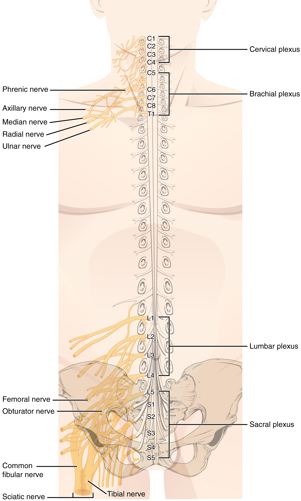
Anosmia is the loss of the sense of smell. It is often the result of the olfactory nerve being severed, usually because of blunt force trauma to the head. The sensory neurons of the olfactory epithelium have a limited lifespan of approximately one to four months, and new ones are made on a regular basis. The new neurons extend their axons into the CNS by growing along the existing fibers of the olfactory nerve. The ability of these neurons to be replaced is lost with age. Age-related anosmia is not the result of impact trauma to the head, but rather a slow loss of the sensory neurons with no new neurons born to replace them.
Smell is an important sense, especially for the enjoyment of food. There are only five tastes sensed by the tongue, and two of them are generally thought of as unpleasant tastes (sour and bitter). The rich sensory experience of food is the result of odor molecules associated with the food, both as food is moved into the mouth, and therefore passes under the nose, and when it is chewed and molecules are released to move up the pharynx into the posterior nasal cavity. Anosmia results in a loss of the enjoyment of food.
As the replacement of olfactory neurons declines with age, anosmia can set in. Without the sense of smell, many sufferers complain of food tasting bland. Often, the only way to enjoy food is to add seasoning that can be sensed on the tongue, which usually means adding table salt. The problem with this solution, however, is that this increases sodium intake, which can lead to cardiovascular problems through water retention and the associated increase in blood pressure.
📖 OpenStax Anatomy & Physiology 2e, Section 13.5. openstax.org · CC BY 4.0
| Section | Title |
|---|---|
| 13.2 | 13.2: The Embryologic Perspective |
| 13.3 | 13.3: The Central Nervous System |
| 13.4 | 13.4: Circulation and the Central Nervous System |
| 13.5 | 13.5: The Peripheral Nervous System |